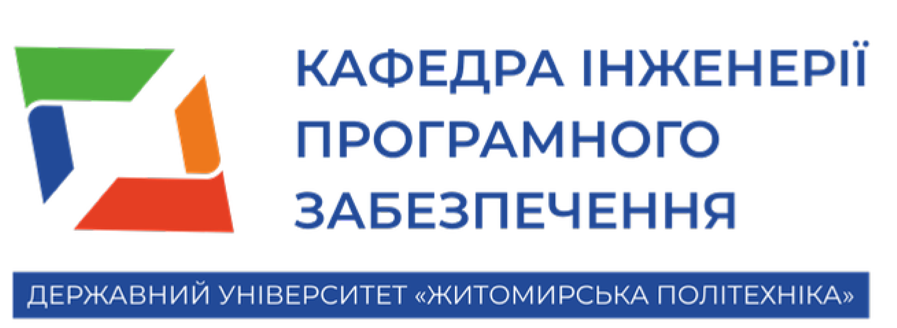
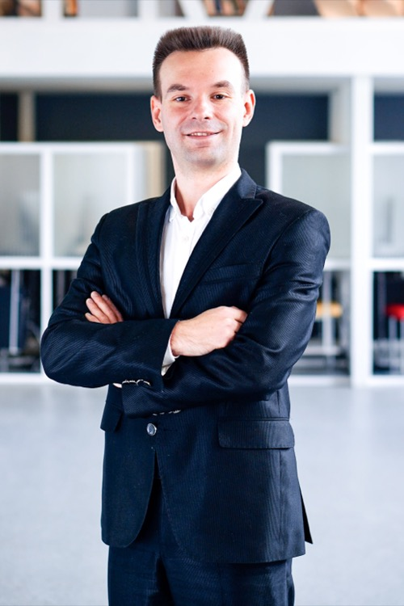
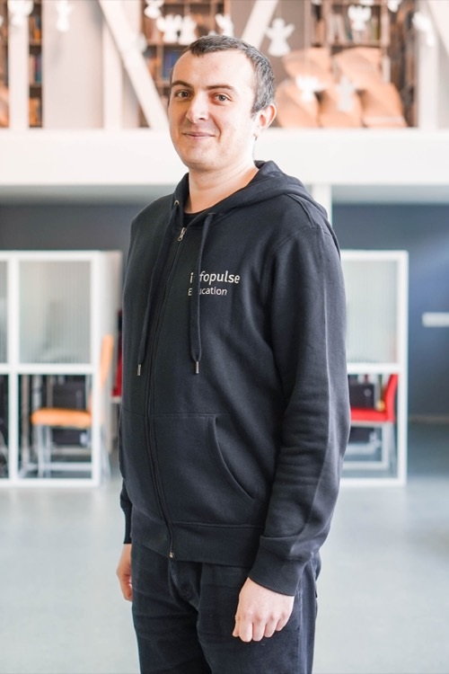
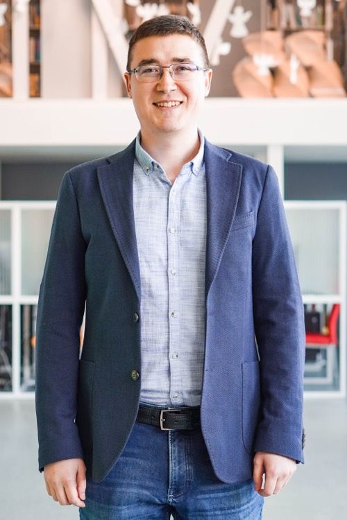
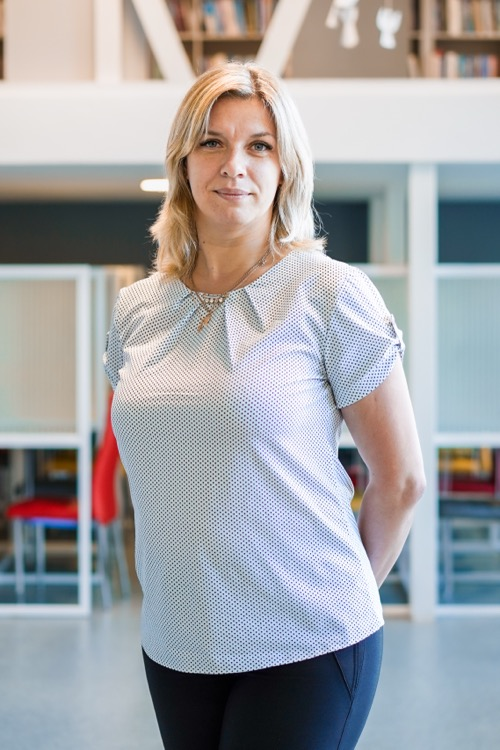
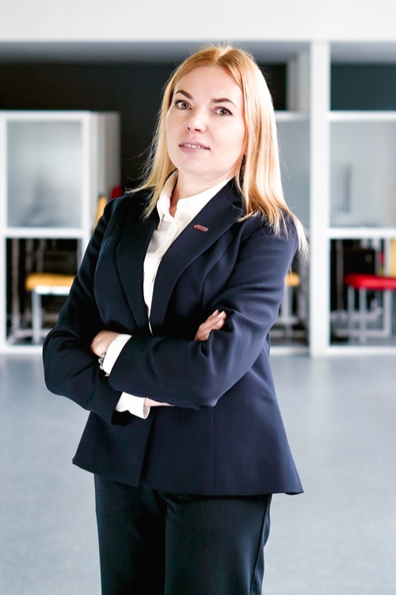
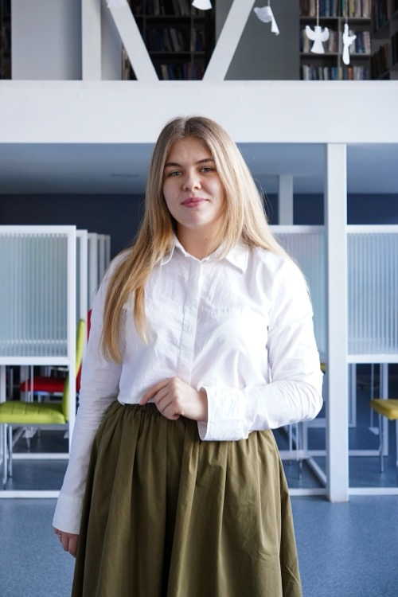
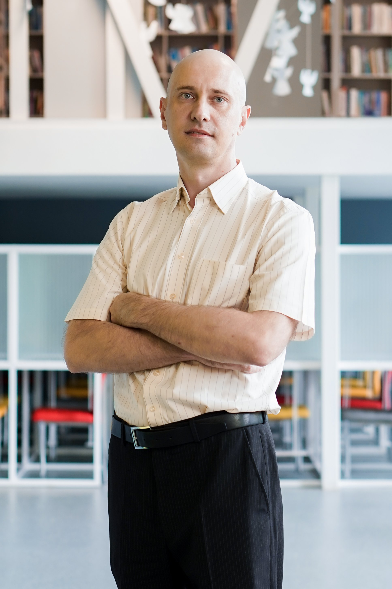

Державний
університет «Житомирська політехніка»
Факультет
інформаційно-комп'ютерних технологій
Зустріч з
гарантами освітніх програм
Гаранти освітніх програм · спеціальність 121
ІПЗ, бакалавр: Морозов Андрій Васильович
Веб-технології, бакалавр: Савіцький Роман Святославович
ІПЗ, магістр: Фант Микола Олександрович
ІПЗ, доктор філософії: Вакалюк Тетяна Анатоліївна

Порядок денний
- Керівництво факультету та кафедри
- Особливості навчання цього року: графік, сесії, канікули, практики
- Академічна доброчесність
- Академічна мобільність
- Неформальна освіта та перезарахування
- Дії під час повітряної тривоги
- Запитання та відповіді
Гаранти освітніх програм

Морозов Андрій Васильович
ІПЗ · бакалавр

Савіцький Роман Святославович
Веб-технології · бакалавр

Фант Микола Олександрович
ІПЗ · магістр

Вакалюк Тетяна Анатоліївна
ІПЗ · доктор філософії
Керівництво факультету (ФІКТ)

Нікітчук Тетяна Миколаївна
Декан факультету
Фант Микола Олександрович
Перший заступник декана

Болотіна Вікторія Василівна
Заступник із міжнародної політики та проєктів
Фуріхата Денис Вікторович
Заступник із молодіжної політики
Кафедра інженерії програмного забезпечення
Вакалюк Тетяна Анатоліївна
Завідувач кафедри
Савіцький Роман Святославович
Заступник завідувача кафедри
Особливості 2026/2027 навчального року
Графік освітнього
процесу · бакалавр, денна форма
- 01.09 – 05.09.2026Лекційний тиждень
- 07.09 – 26.12.2026Осінній семестр —
теоретичне навчання (16 тижнів)
- 28.12.2026 – 10.01.2027Зимові канікули
- 11.01 – 24.01.2027Зимова
заліково-екзаменаційна сесія
- 25.01 – 30.01.2027Лекційний тиждень (2
семестр)
- 01.02 – 22.05.2027Весняний семестр —
теоретичне навчання (16 тижнів)
- 24.05 – 05.06.2027Літня заліково-екзаменаційна
сесія
- 07.06 – 04.07.2027Практика (2–4 тижні)
- з 05.07.2027Літні канікули
За наказом ЖП № 187/од від
05.06.2026
Практична підготовка
Строки:
07.06 – 04.07.2027 · тривалість 2–4 тижні
| Курс |
Практика |
Керівник практики |
| 1 курс |
Навчальна |
Вакалюк Тетяна Анатоліївна |
| 2 курс |
Технологічна |
Чижмотря Олена Геннадіївна |
| 3 курс |
Виробнича |
Локтікова Тамара Миколаївна |
| 4 курс |
Переддипломна* |
Єфремов Юрій Миколайович |
* Терміни будуть змінені
Академічна доброчесність
Частина загальної доброчесності — цілісний розвиток і виховання чесності, що
згодом проявляється як особиста та соціальна відповідальність упродовж життя.
Цінності
доброчесності
- свідомо діяти правильно та чесно;
- свобода думки й повага до думок інших;
- відповідальність за свої дії;
- компетентність і розвиток знань.
Види порушень
Плагіат —
оприлюднення чужих результатів чи текстів без зазначення авторства
Види плагіату
- Copy & paste — чужий текст без змін і без цитування;
- Shake & paste — компіляція чужих фрагментів;
- Idea — чужі ідеї своїми словами без джерела;
- Translation — переклад без посилання.
Інші порушення
- фабрикація — вигадування даних;
- фальсифікація — зміна наявних даних;
- списування — недозволені джерела;
- несанкціонована допомога — без дозволу викладача.
Відповідальність здобувачів
За порушення
академічної доброчесності здобувач може отримати:
- повторне проходження оцінювання (контрольна, іспит, залік);
- повторне проходження освітнього компонента ОП;
- відрахування із закладу освіти;
- позбавлення академічної стипендії;
- позбавлення наданих закладом пільг з оплати навчання.
Хто відповідає за доброчесність
Комісії з академічної доброчесності, етики та управління конфліктами —
розглядають звернення про порушення, питання етики та конфліктні ситуації.
Функції комісії
- розгляд звернень і доказів;
- висновки щодо порушень;
- урегулювання конфліктів та етики.
Омбудсмен — куди
звертатися

Карпунець Володимир Дмитрович
Антикорупційний уповноважений
✉ kppd_kvd@ztu.edu.ua
Кабінет 231
Академічна мобільність
Можливість частину навчання пройти в іншому ЗВО в Україні чи за кордоном
із перезарахуванням результатів.
До кого звертатися
- 🔹 Відділ міжнародних зв'язків
- 🔹 Деканат — Болотіна Вікторія
Василівна
заступник декана з
міжнародної політики та проєктів
Актуальні конкурси:
діючі міжнародні проєкти
Erasmus+ ICM — навчання за кордоном
Міжнародна кредитна
мобільність: семестр навчання або практика в університеті-партнері з перезарахуванням
кредитів
14 країн · 37 університетів-партнерів
🇵🇱 Польща8
🇹🇷 Туреччина7
🇮🇹 Італія5
🇭🇷 Хорватія3
🇪🇸 Іспанія2
🇨🇾 Кіпр2
🇷🇴 Румунія2
🇨🇿 Чехія2
🇬🇧 Великобританія1
🇬🇷 Греція1
🇩🇪 Німеччина1
🇷🇸 Сербія1
🇸🇮 Словенія1
🇫🇷 Франція1
Види мобільності
- семестр навчання за кордоном;
- практика / стажування;
- перезарахування здобутих кредитів.
Неформальна та інформальна освіта
Результати онлайн-курсів, сертифікатів і тренінгів можна зарахувати як
результати навчання за освітньою програмою.
Що можна
зарахувати
- онлайн-курси: Prometheus, Coursera, Udemy, EdEra;
- сертифікати та свідоцтва;
- тренінги, професійні курси.
Ліміт кредитів ЄКТС
Бакалавр —
до 30 кредитів
Магістр / PhD —
до 6 кредитів
Визнання — впродовж семестру вивчення дисципліни
Процедура: заява + декларація про попереднє навчання → оцінювання комісією
(можлива апеляція). За окремі теми — звернення до викладача з документами та співбесіда.
Положення про
організацію освітнього процесу ·
детальніше
Дії під час повітряної тривоги
За сигналом тривоги — усі прямують в укриття: новий корпус або «Динамо».
Ситуація 1. Триває з ночі
Немає відбою за 10–60 хв до пар → перше заняття асинхронно. Наступне —
очно, якщо відбій за годину до початку.
Ситуація 2. Перед / під час / між заняттями
Оголошено менше ніж за 10 хв до початку, під час або між заняттями → всі в укриття,
заняття через 15 хв після відбою.
Ситуація 3. Триває станом на 15:00
Усі заняття після відбою проводяться дистанційно.
Асинхронний режим: викладач розміщує завдання на Освітньому
порталі, студент виконує їх і надсилає викладачу.
Кафедра інженерії
програмного забезпечення
Дякуємо за увагу!